Supreme Theme
This is the theme help documentation file. Please search this before contacting for support. Note: We do not support theme customizations beyond it's original functionality & appearance.
Live Demo Contact Us1. Getting started
We really appreciate that you bought our template. We hope that it will be serves you well. If your like our template just let us now or you can stay in touch with us through facebook or twitter. It would be great if you recomended us to your friends and colleagues. If you have some questions just send a message we are looking forward to your emails.
Your Pixelized team.2. Feedback
Like our work? Have some problem? Drop us line. We really like to hear about you. Especially we like to see your websites builded on our theme. Don't be shy and send us link to your branded new websites. The best sites we will posted on our Facebook or twitter if you give us your permission. Nothing is better feel than see our theme on working site.
Facebook Twitter3. Plugins
- 3.1 Font-awesome
- 3.2 Isotope
- 3.3 Magnific Popup
- 3.4 Owl Carousel
- 3.5 Boostrap Validation
- 3.6 PHP Mailer Carousel
- 3.7 Animate
- 3.8 Color Switcher
- 3.9 Creative Brands
- 3.10 Counter Up
- 3.11 jQuery Countdown
3.1 Font Awesome
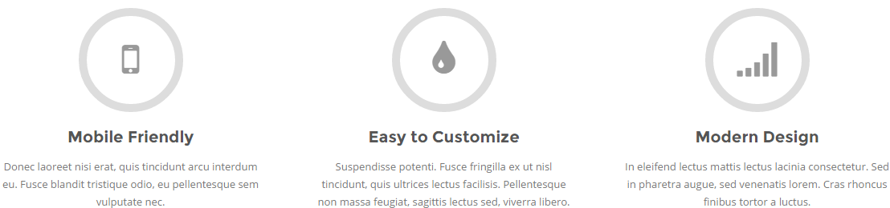{kind=link}
It’s one of the most powerfull tools. Font Awesome gives you scalable vector icons that can instantly be customized — size, color, drop shadow, and anything that can be done with the power of CSS. Let’s take a look. In the index.html you can find few icons in Service section. This is a font awesome so let’s say we want to change them to more suitable for your purposes. Open the index.html in some editor and find following code.
<i class="fa fa-mobile"></i>
Here you can change appearance of this icon just simply remove class „fa-mobile“ and type for instance „fa-money“. Now save the changes and refresh page and icon is different.
For full documentation how to customize this plugin (size, color, rotation etc.) and full list of different types of icons go to fontawesome.io
3.2 Isotope
This plugin allow us really cool effect which you can see in page portfolio.html when you clicked on some of these buttons.
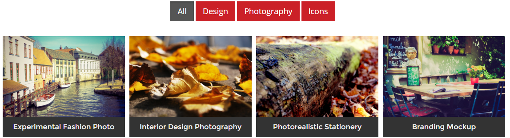{kind=link}
Then you can watch cool shuffle effect. This plugin we bought specially for you.
Full documentation you can check here isotope.metafizzy.co
3.3 Magnific Popup
Magnific Popup is a responsive lightbox & dialog script with focus on performance and providing best experience for user with any device.
For full documentation go to www.dimsemenov.com/plugins/magnific-popup/
3.4 Owl Carousel
We decided replace default bootstrap carousel to amazing Owl carousel. This plugin is used for slideshow on index.html page and other homepages.
This carousel has tons of features it’s a powerfull tool.
For full documentation go to www.owlcarousel.owlgraphic.com
3.5 Bootstrap Validation
This plugin checks correctly entered data into the contact form. Until all data are correctly entered into the contact form will not be sent. If you send the form and if any data is not filled or filled incorrectly, contact form displays a warning message.
For full documentation how to customize this plugin go to Bootstrap Validation
3.6 PHP Mailer
We prepared for you send.php file. This is only example how to use php mailer plugin for sending email through contact form. Only thing you have to do is download that phpmailer plugin from here. For full documentation check php mailer.
3.7 Animate
Common use of animate
It is awesome CSS3 plugin which allows us to animated individual parts of our themes. Example is best so in the index page you can seen image with some devices. When you refresh the page this object is slightly slide in down if you want to change this effect simply open in index.html in some editor, go to the line 180 and try to change class „fadeInDown“ to „slideInLeft“. You see what happens when you safe the changes and refresh the index page.
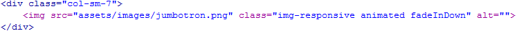{kind=link}
Animate plugin in Owl Carousel
This plugin uses Owl Carousel for effects when carousel sliding to another slide.
For full documentation go to daneden.github.io/animate.css/
3.8 Color Switcher
It is plugin developed by ourselfs. It allows you to change a color in real time. Basically you can change the whole appereance by yourself.
Now let’s take a look how to set your favourite look.
Setup color
- At first you have to decided which color is best for you.
- Open .html page in some editor.
- To change your color find line 40.
{kind=link}
Now just simply change (underlined word) "red" to the one you choosen on the start of this procedure "blue" now save this change and refres edited page and enjoy.
All colors
| Color | Hex code | Preview |
|---|---|---|
| Red | CB2027 | |
| Blue | 3276B1 | |
| Orange | F8B533 | |
| Green | 54B132 | |
| Purple | D138BD | |
| Light Blue | 60ACDB | |
| Light Green | 87D14B | |
| Brown | B18232 | |
| Yellow | E8D827 | |
| Pink | E66CE1 |
Remove ColorSwitcher
When you are done with color changes is no longer necessary to have ColorSwither on your page.
- Open .html files and delete everything between lines 62 - 83 including. On the image below are the lines which you delete. Now the icon of ColorSwitcher on the page is gone.
- Delete file color-switcher.css
- Delete file color-switcher.js
3.9 Creative Brands
It’s css add-on more than plugin. This add-on edits appereance of logos social sites in the footer. For more brands.pixelized.cz
3.10 Counter Up
This plugin allows us visualize counting to some number. You can see this plugin under "WHAT PEOPLE SAY ABOUT US" section.
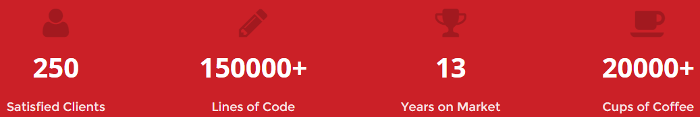{kind=link}
To customize this open .html file and find "counter" section. Inside this section find element "span" inside this span just type your number. Everything you can see on picture below
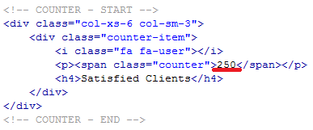
In the custom.js you can find initialization of this plugin and setting as a dealy or time.

Full documentation you can check here github.com/bfintal/Counter-Up
3.11 jQuery Countdown
As the name of this plugin says this is just simple countdown. This plugin you can find on homepage-3.html and homepage-5.html
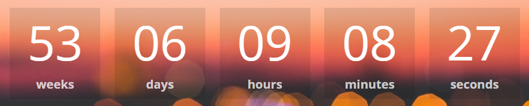{kind=link}
If you want to change date just simply open custom.js and go to line 210 and change '2017/01/01' to any date you want in format 'YYYY/MM/DD'
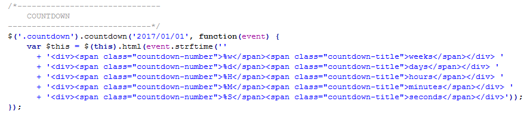For mor information how display your tweets check full documentation of this plugin. jQuery Countdown
4. Features
4.1 Owl Carousel with Animations
We created very simple animated carousel. There is used slide effect for headings, paragraphs, lists, etc. Example is used in index.html on every slide.
First you have to add class owl-animation into main element of Owl Carousel.
Now if you want to add some animations to any object. You have add core class animation to the object. Then you have to choose from which side object comes (top-to-bottom). You can also add some delay of slide effect and choose speed of the effect. (default speed is 1000ms)
<h2 class="animation top-to-bottom slow">Supreme</h2>
Owl Animation - Classes
- top-to-bottom
- bottom-to-top
- left-to-right
- right-to-left
- delay-1 (500ms)
- delay-2 (1000ms)
- delay-3 (1500ms)
- delay-4 (2000ms)
- delay-5 (2500ms)
- fast (500ms)
- slow (1500ms)
- very-slow (2000ms)
4.2 Homepage with Video Background
One of our home pages supports video background. It means that you will be able to play video, which is uploaded on youtube, on the background on the top of your homepage. Video background is feature of homepage-4.html
If you want to put your own video you have open homepage-4.html file in some editor and in the "jumbotron" section paste your own video link. You will paste your link insted of link which is underlined on the pictures below.
This kind of link you can find on youtube when you click on "share" below the video. 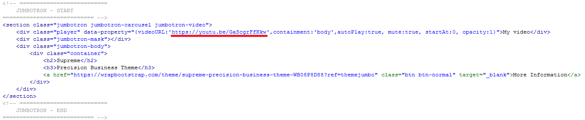
For correct functionality you has to have line, displayed below, on your custom.js. It is plugin initialization.
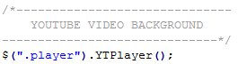You can find full documentation on: pupunzi.open-lab.com
4.3 Type Effect
On the homepage-2.html we are using cool plugin, which was created by matt boldt, this plugins creating some kind of "typing" efect. You can see this in the jumbotron section on the top of the page.
Static part
Customizing is very simple if you want to change static part ("we are" on the demo) open homepage-4.html and edit underlined text from image below.
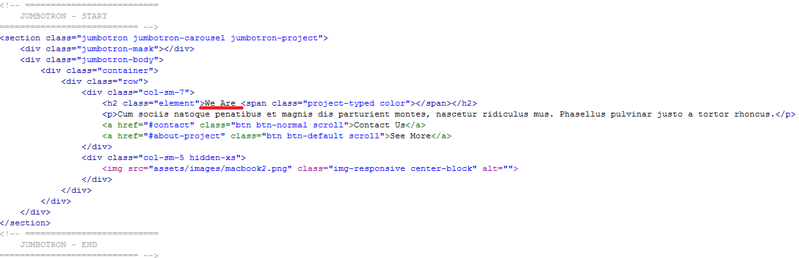Dynamic part
Dynamic part you can customize if you open custom.js file in some editor and find lines which are displayed below. Now there are strings "Creative." and "Modern." you can replace or add more new strings that are more suitable for you.
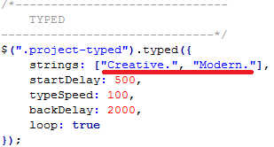Final effect
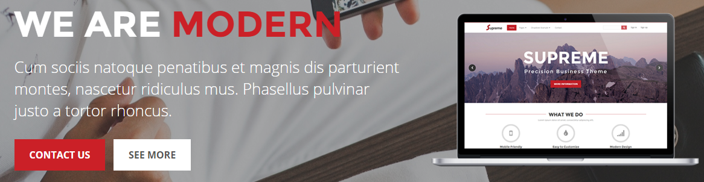You can find full documentation on:www.mattboldt.com/demos/typed-js/
5. FAQ
If I buy an Single application license, can I remove your Copyright-Line?
Yes, in any kind of license you definitely can remove copyright. But if you like our work you can place there just "created by pixelized" it is completely up to you.
How do i connect contact form with my email.
This is only html5, css3 & jQuery theme. There isn't any script to do it. You have to use some external script probably PHP or something. We are selling many of copies and everybody has slightly different requirement so we are not able to build single one script.
Nevertheless we have prepared for you little example how can look like PHP script for sending messages. For more informations check PHP mailer.
Can i use, images included in this theme?
In credits section you can find links to every image. So find image you want in credits and check licence on source page.
6. Credits
6. 1 Plugins
- Font Awesome
- Animate
- Magnific popup
- Owl Carousel
- Bootstrap Validation
- PHP mailer
- Creative Brands
- Isotope
- Waypoints
- Counter Up
- jQuery Countdown
- Video Background
- Typed JS